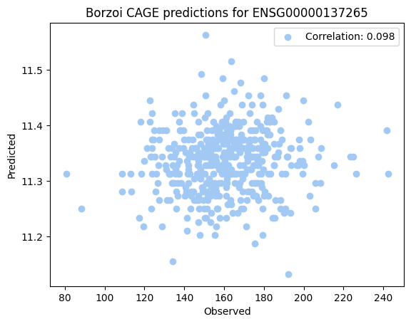
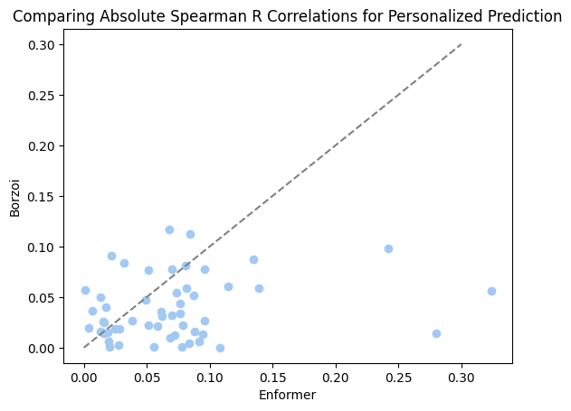
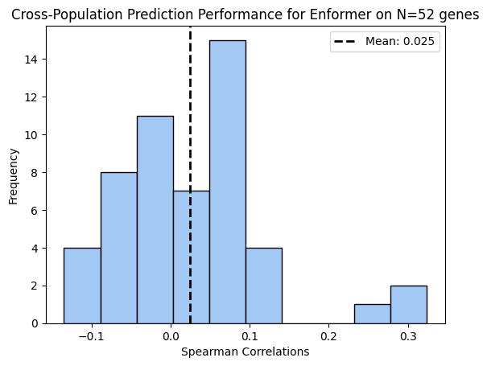
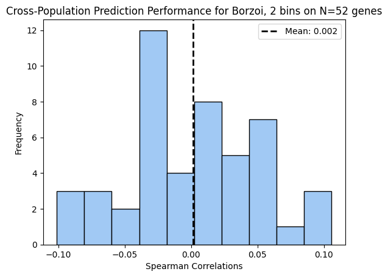
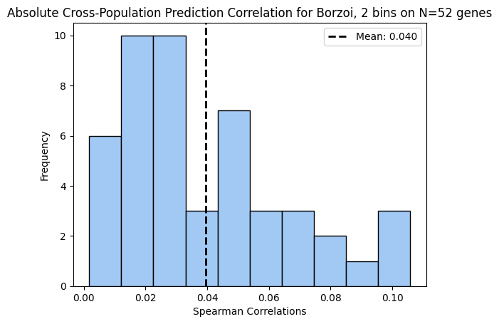
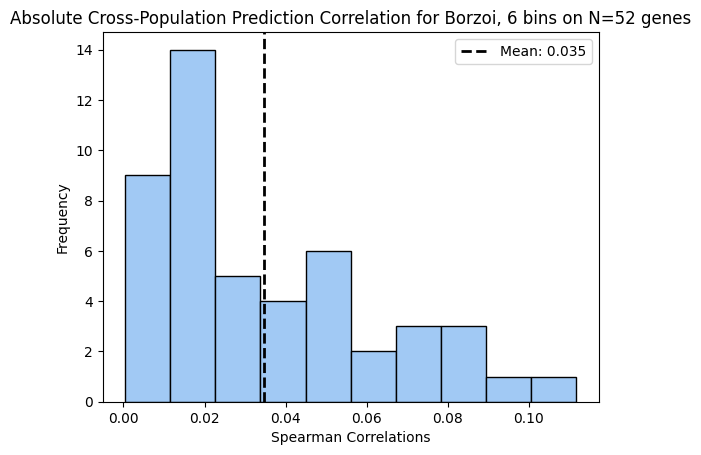
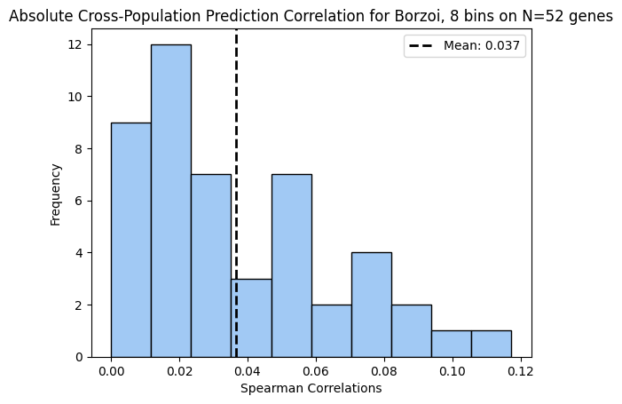
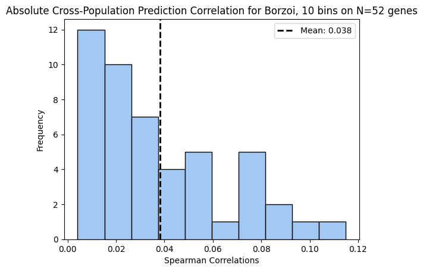

Code
import pandas as pd
import numpy as np
import h5py
import kipoiseq
import matplotlib.pyplot as plt
import reIn this notebook, we explored the question: Does borzoi predictions have a better performance compared to Enformer, at predicting cross-population expression for the CAGE LCL tracks?
Sofia’s Analysis involved comparisons between observed and predicted expression 136 of the top-performing genes for enformer and 140 of the worst-performing genes for enformer (total 276 genes). She sampled 100 individuals from the Geuvadis dataset for both borzoi and enformer predictions
Sabrina’s Analysis predicted gene expression for 100 randomly-sampled genes across all 455 Geuvadis samples.
For both experiments, we compared the correlation between the predictions using both tools, and the ground truth measurements of the Geuvadis gene expression for the same individuals as the prediction. We examined correlations with the ground truth as a measure of performance.
import pandas as pd
import numpy as np
import h5py
import kipoiseq
import matplotlib.pyplot as plt
import reDATA = '/home/t-9ssal0/data/'
PROJECT = '/project2/haky/sofia/borzoiRun/'
geuvadis_file = DATA + 'geuvadis_expression.gz'
geuvadis_gene_expression = pd.read_table(geuvadis_file, sep='\t',
dtype={'gene_id': str, 'gene_name':str, 'TargetID':str, 'Chr':str})
individuals_file = pd.read_csv(PROJECT + 'my_individuals.tsv', sep = '\t')
individuals = individuals_file['Individuals'].to_list()Loading gene lists for both analysis
best_predicted_genes_df = pd.read_csv('/project2/haky/sofia/borzoiRun/predicted_genes_20oct.csv', header=None)
best_my_genes = best_predicted_genes_df[0].to_list() # 136 best performing genes
gene_list = []
for i in range(1, 8):
genes_file = pd.read_csv(f'{PROJECT}gene_lists/worst_list{i}.csv')
gene_list.append(genes_file['x'].to_list())
worst_my_genes = [item for sublist in gene_list for item in sublist] # 140 worst performing genesdef get_genes_per_file(num_files, type):
file_type = "" if type.lower() == "best" else "fast_"
predicted_genes = []
all_genes = []
for s in range(1, num_files + 1):
# assuming both files have the same genes
with h5py.File('/scratch/midway3/t-9ssal0/h5_files/'+file_type+'enformer_predictions' +str(s)+ '.h5', 'r') as file:
group = file[individuals[0]]
predicted_genes.append(list(group.keys()))
for l in predicted_genes:
all_genes.append(list((set([re.sub(r"_haplo\d+", "", s) for s in l]))))
return(all_genes)
best_genes_per_file = get_genes_per_file(7, "best")
worst_genes_per_file = get_genes_per_file(7, "worst")Note: moved all h5 files to /cds/haky/sofia/h5_files/
def get_expression_dic(number_files, software, type, genes_per_file):
file_type = "" if type.lower() == "best" else "fast_"
expression_dic = {k:{} for k in individuals}
start_bin = 0 if software.lower() == 'borzoi' else 3
end_bin = 17 if software.lower() == 'borzoi' else 7
index = [870, 871] if software.lower()== 'borzoi' else 5110
for individual in individuals:
gene_expr = {}
for file_num in range(1, number_files + 1):
with h5py.File('/scratch/midway3/t-9ssal0/h5_files/'+file_type + software.lower() + '_predictions'+ str(file_num)+ '.h5', 'r') as file:
for gene in genes_per_file[file_num - 1]: #iterate through genes in file
group = file[individual]
expression = 0
for h in range(0,2): # iterate through haplotypes
prediction = group[f'{gene}_haplo{h}'][:, index]
if software.lower() == 'borzoi':
prediction = np.mean(prediction, axis = (1)) # mean over track replicates
expression += np.mean(prediction[start_bin: end_bin])
gene_expr[gene] = expression
del prediction
expression_dic[individual] = gene_expr
return expression_dic
def get_predictions_across_indiv(expression_dic, genes):
predictions_across_ind = {gene:[] for gene in genes}
for individual in expression_dic:
for gene in genes:
predictions_across_ind[gene].append(expression_dic[individual][gene])
return predictions_across_ind
def get_correlations(dic1, dic2):
corr = {gene: np.empty(len(individuals)) for gene in dic1.keys()}
for gene in dic1.keys():
col_corr = np.corrcoef(dic1[gene], dic2[gene])[0,1]
corr[gene] = col_corr
return(corr)best_expression_borzoi_dic = get_expression_dic(7, 'borzoi', 'best', best_genes_per_file)
best_expression_enformer_dic = get_expression_dic(7, 'enformer', 'best', best_genes_per_file)
best_borzoi_across_individuals = get_predictions_across_indiv(best_expression_borzoi_dic, best_my_genes)
best_enformer_across_individuals = get_predictions_across_indiv(best_expression_enformer_dic, best_my_genes)Geuvadis data
geuvadis = geuvadis_gene_expression.loc[geuvadis_gene_expression['gene_name'].isin(best_my_genes)]
geuvadis.index = geuvadis['gene_name']
geuvadis = geuvadis.loc[:, individuals]
geuvadis = geuvadis.loc[best_my_genes]
best_GT_across = {gene:val for gene, val in zip(best_my_genes, geuvadis.values.tolist())}best_corr_borzoi_enf = get_correlations(best_borzoi_across_individuals, best_enformer_across_individuals)
best_corr_enf_GT = get_correlations(best_enformer_across_individuals, best_GT_across)
best_corr_bor_GT = get_correlations(best_borzoi_across_individuals, best_GT_across)best_df_enf_bor = pd.DataFrame({'Correlations': best_corr_borzoi_enf,
'abs_Correlations':best_corr_borzoi_enf})
best_df_enf_bor['abs_Correlations'] = abs(best_df_enf_bor['abs_Correlations'])
best_df_enf_bor.head(10)| Correlations | abs_Correlations | |
|---|---|---|
| CDC16 | 0.824303 | 0.824303 |
| DPYSL4 | 0.725614 | 0.725614 |
| ZFAND2A | -0.945341 | 0.945341 |
| DCAF4 | 0.221603 | 0.221603 |
| ZFYVE19 | 0.560699 | 0.560699 |
| MCOLN2 | 0.664648 | 0.664648 |
| XRRA1 | 0.864334 | 0.864334 |
| TTLL12 | 0.821124 | 0.821124 |
| USP40 | 0.959084 | 0.959084 |
| UGT2B17 | 0.989967 | 0.989967 |
fig, axes = plt.subplots(1, 2, figsize=(12, 4))
axes[0].hist(best_df_enf_bor['Correlations'], bins=10, color='skyblue', edgecolor='white')
axes[0].set_xlabel('Value')
axes[0].set_ylabel('Frequency')
axes[0].set_title('Correlations Enformer - Borzoi')
# Plot the second histogram in the second subplot
axes[1].hist(best_df_enf_bor['abs_Correlations'], bins=10, color='salmon', edgecolor='white')
axes[1].set_xlabel('Value')
axes[1].set_ylabel('Frequency')
axes[1].set_title('Absolute correlations Enformer - Borzoi')
# Adjust layout and display the subplots
plt.tight_layout()
plt.show()
best_df_against_GT = pd.DataFrame({'Enformer': best_corr_enf_GT,
'Borzoi': best_corr_bor_GT,
'abs_Enformer': best_corr_enf_GT,
'abs_Borzoi': best_corr_bor_GT})
best_df_against_GT['abs_Enformer'] = abs(best_df_against_GT['abs_Enformer'])
best_df_against_GT['abs_Borzoi'] = abs(best_df_against_GT['abs_Borzoi'])
best_df_against_GT.head(10)| Enformer | Borzoi | abs_Enformer | abs_Borzoi | |
|---|---|---|---|---|
| CDC16 | -0.242646 | -0.308183 | 0.242646 | 0.308183 |
| DPYSL4 | 0.318979 | 0.439701 | 0.318979 | 0.439701 |
| ZFAND2A | -0.444695 | 0.386350 | 0.444695 | 0.386350 |
| DCAF4 | -0.478554 | 0.248134 | 0.478554 | 0.248134 |
| ZFYVE19 | -0.017018 | 0.119285 | 0.017018 | 0.119285 |
| MCOLN2 | 0.440237 | 0.086427 | 0.440237 | 0.086427 |
| XRRA1 | 0.367341 | 0.476587 | 0.367341 | 0.476587 |
| TTLL12 | 0.284871 | 0.278919 | 0.284871 | 0.278919 |
| USP40 | -0.452123 | -0.500160 | 0.452123 | 0.500160 |
| UGT2B17 | 0.399678 | 0.409415 | 0.399678 | 0.409415 |
fig = plt.figure(figsize = (10, 5))
ax1 = fig.add_subplot(121)
ax1.scatter(best_df_against_GT['Borzoi'], best_df_against_GT['Enformer'], color='skyblue', label='Correlations with GT')
ax1.plot([-1, 1],[-1, 1], color = 'black', linestyle = '--', label = 'Identity line')
ax1.set_xlabel('Borzoi')
ax1.set_ylabel('Enformer')
ax1.legend()
ax2 = fig.add_subplot(122)
ax2.scatter(best_df_against_GT['abs_Borzoi'], best_df_against_GT['abs_Enformer'], color='salmon', label='Absolute correlations with GT')
ax2.plot([0, 1],[0, 1], color = 'black', linestyle = '--', label = 'Identity line')
ax2.set_xlabel('Borzoi')
ax2.set_ylabel('Enformer')
ax2.legend()
plt.tight_layout()
plt.show()fig = plt.figure(figsize = (10, 5))
ax1 = fig.add_subplot(121)
ax1.scatter(sorted(best_df_against_GT['Borzoi']), sorted(best_df_against_GT['Enformer']), color='skyblue', label='Correlations with GT')
ax1.plot([-0.8, 0.80],[-0.8, 0.80], color = 'black', linestyle = '--', label = 'Identity line')
ax1.set_xlabel('Borzoi')
ax1.set_ylabel('Enformer')
ax1.legend()
ax2 = fig.add_subplot(122)
ax2.scatter(sorted(best_df_against_GT['abs_Borzoi']), sorted(best_df_against_GT['abs_Enformer']), color='salmon', label='Absolute correlations with GT')
ax2.plot([0, 0.6],[0, 0.6], color = 'black', linestyle = '--', label = 'Identity line')
ax2.set_xlabel('Borzoi')
ax2.set_ylabel('Enformer')
ax2.legend()
plt.tight_layout()
plt.show()
def get_expression_dic2(number_files, software, bins_around):
expression_dic = {k:{} for k in individuals}
start_bin = (9 - bins_around) if software.lower() == 'borzoi' else 3
end_bin = (9 + bins_around) if software.lower() == 'borzoi' else 7
index = [870, 871] if software.lower()== 'borzoi' else 5110
for individual in individuals:
gene_expr = {}
for file_num in range(1, number_files + 1):
with h5py.File('/scratch/midway3/t-9ssal0/h5_files/' + software.lower() + '_predictions'+ str(file_num)+ '.h5', 'r') as file:
for gene in best_genes_per_file[file_num - 1]: #iterate through genes in file
group = file[individual]
expression = 0
for h in range(0,2): # iterate through haplotypes
prediction = group[f'{gene}_haplo{h}'][:, index]
if software.lower() == 'borzoi':
prediction = np.mean(prediction, axis = (1)) # mean over track replicates
expression += np.mean(prediction[start_bin: end_bin])
gene_expr[gene] = expression
del prediction
expression_dic[individual] = gene_expr
return expression_dicexpression_borzoi_8 = get_expression_dic2(7,'borzoi', 4)
borzoi_across_individuals_8 = get_predictions_across_indiv(expression_borzoi_8, best_my_genes)expression_borzoi_4 = get_expression_dic2(7, 'borzoi', 2)
borzoi_across_individuals_4 = get_predictions_across_indiv(expression_borzoi_4, best_my_genes)expression_borzoi_2 = get_expression_dic2(7, 'borzoi', 1)
borzoi_across_individuals_2 = get_predictions_across_indiv(expression_borzoi_2, best_my_genes)corr_borzoi_8 = get_correlations(borzoi_across_individuals_8, best_GT_across)
corr_borzoi_4 = get_correlations(borzoi_across_individuals_4, best_GT_across)
corr_borzoi_2 = get_correlations(borzoi_across_individuals_2, best_GT_across)bin_ranges_df = pd.DataFrame({'Borzoi 16 bins': best_corr_bor_GT,
'Borzoi 8 bins': corr_borzoi_8,
'Borzoi 4 bins': corr_borzoi_4,
'Borzoi 2 bins': corr_borzoi_2})
bin_ranges_df.head(10)| Borzoi 16 bins | Borzoi 8 bins | Borzoi 4 bins | Borzoi 2 bins | |
|---|---|---|---|---|
| CDC16 | -0.308183 | -0.173212 | -0.097312 | 0.064835 |
| DPYSL4 | 0.439701 | 0.442904 | 0.438260 | 0.057265 |
| ZFAND2A | 0.386350 | 0.386898 | 0.043857 | 0.544630 |
| DCAF4 | 0.248134 | 0.519006 | 0.557798 | 0.529078 |
| ZFYVE19 | 0.119285 | 0.125048 | 0.367074 | -0.365466 |
| MCOLN2 | 0.086427 | -0.420791 | -0.507746 | -0.510637 |
| XRRA1 | 0.476587 | 0.488511 | 0.541467 | 0.566548 |
| TTLL12 | 0.278919 | 0.278045 | 0.274921 | 0.302587 |
| USP40 | -0.500160 | -0.493973 | -0.475467 | -0.469835 |
| UGT2B17 | 0.409415 | 0.402573 | 0.391174 | 0.389104 |
import itertools
column_combinations = list(itertools.combinations(bin_ranges_df.columns, 2))
fig, axes = plt.subplots(3, 2, figsize=(10, 10))
for i, (col1, col2) in enumerate(column_combinations):
row, col = divmod(i, 2) # Calculate the row and column for the current subplot
ax = axes[row, col] # Select the current subplot
# Plot the data (customize this part as needed)
ax.scatter(bin_ranges_df[col1], bin_ranges_df[col2], color='darkorange', label='Correlations against GT')
ax.plot([-1, 1], [-1, 1], color='gray', linestyle='--', label='Identity Line')
ax.set_xlabel(col1)
ax.set_ylabel(col2)
ax.legend()
# Adjust layout and display the plot
plt.tight_layout()
plt.show()worst_expression_borzoi_dic = get_expression_dic(7, 'borzoi', 'worst', worst_genes_per_file)
worst_expression_enformer_dic = get_expression_dic(7, 'enformer', 'worst', worst_genes_per_file)
worst_borzoi_across_individuals = get_predictions_across_indiv(worst_expression_borzoi_dic, worst_my_genes)
worst_enformer_across_individuals = get_predictions_across_indiv(worst_expression_enformer_dic, worst_my_genes)geuvadis = geuvadis_gene_expression.loc[geuvadis_gene_expression['gene_name'].isin(worst_my_genes)]
geuvadis.index = geuvadis['gene_name']
geuvadis = geuvadis.loc[:, individuals]
geuvadis = geuvadis.loc[worst_my_genes]
worst_GT_across = {gene:val for gene, val in zip(worst_my_genes, geuvadis.values.tolist())}worst_corr_borzoi_enf = get_correlations(worst_borzoi_across_individuals, worst_enformer_across_individuals)
worst_corr_enf_GT = get_correlations(worst_enformer_across_individuals, worst_GT_across)
worst_corr_bor_GT = get_correlations(worst_borzoi_across_individuals, worst_GT_across)worst_df_enf_bor = pd.DataFrame({'Correlations': worst_corr_borzoi_enf,
'abs_Correlations':worst_corr_borzoi_enf})
worst_df_enf_bor['abs_Correlations'] = abs(worst_df_enf_bor['abs_Correlations'])
worst_df_enf_bor.head(10)| Correlations | abs_Correlations | |
|---|---|---|
| ATP6V1E2 | 0.052960 | 0.052960 |
| ZNF384 | 0.672741 | 0.672741 |
| SART3 | 0.732671 | 0.732671 |
| SLC15A2 | -0.523820 | 0.523820 |
| AKR7A2 | 0.075323 | 0.075323 |
| GBP1 | 0.513649 | 0.513649 |
| ZNF624 | -0.668723 | 0.668723 |
| MRTO4 | -0.090715 | 0.090715 |
| CD84 | 0.076973 | 0.076973 |
| RAB40B | -0.690359 | 0.690359 |
fig, axes = plt.subplots(1, 2, figsize=(12, 4))
axes[0].hist(worst_df_enf_bor['Correlations'], bins=10, color='skyblue', edgecolor='white')
axes[0].set_xlabel('Value')
axes[0].set_ylabel('Frequency')
axes[0].set_title('Correlations Enformer - Borzoi')
# Plot the second histogram in the second subplot
axes[1].hist(worst_df_enf_bor['abs_Correlations'], bins=10, color='salmon', edgecolor='white')
axes[1].set_xlabel('Value')
axes[1].set_ylabel('Frequency')
axes[1].set_title('Absolute correlations Enformer - Borzoi')
# Adjust layout and display the subplots
plt.tight_layout()
plt.show()worst_df_against_GT = pd.DataFrame({'Enformer': worst_corr_enf_GT,
'Borzoi': worst_corr_bor_GT,
'abs_Enformer': worst_corr_enf_GT,
'abs_Borzoi': worst_corr_bor_GT})
worst_df_against_GT['abs_Enformer'] = abs(worst_df_against_GT['abs_Enformer'])
worst_df_against_GT['abs_Borzoi'] = abs(worst_df_against_GT['abs_Borzoi'])
worst_df_against_GT.head(10)| Enformer | Borzoi | abs_Enformer | abs_Borzoi | |
|---|---|---|---|---|
| ATP6V1E2 | 0.164837 | 0.322586 | 0.164837 | 0.322586 |
| ZNF384 | 0.079999 | 0.129734 | 0.079999 | 0.129734 |
| SART3 | -0.031612 | -0.124788 | 0.031612 | 0.124788 |
| SLC15A2 | -0.078513 | 0.076483 | 0.078513 | 0.076483 |
| AKR7A2 | -0.107319 | 0.280086 | 0.107319 | 0.280086 |
| GBP1 | -0.167450 | -0.006239 | 0.167450 | 0.006239 |
| ZNF624 | 0.037769 | 0.005369 | 0.037769 | 0.005369 |
| MRTO4 | -0.255579 | 0.036356 | 0.255579 | 0.036356 |
| CD84 | 0.096425 | 0.063115 | 0.096425 | 0.063115 |
| RAB40B | -0.045073 | 0.052897 | 0.045073 | 0.052897 |
fig = plt.figure(figsize = (10, 5))
ax1 = fig.add_subplot(121)
ax1.scatter(worst_df_against_GT['Borzoi'], worst_df_against_GT['Enformer'], color='skyblue', label='Correlations with GT')
ax1.plot([-1, 1],[-1, 1], color = 'black', linestyle = '--', label = 'Identity line')
ax1.set_xlabel('Borzoi')
ax1.set_ylabel('Enformer')
ax1.legend()
ax2 = fig.add_subplot(122)
ax2.scatter(worst_df_against_GT['abs_Borzoi'], worst_df_against_GT['abs_Enformer'], color='salmon', label='Absolute correlations with GT')
ax2.plot([0, 1],[0, 1], color = 'black', linestyle = '--', label = 'Identity line')
ax2.set_xlabel('Borzoi')
ax2.set_ylabel('Enformer')
ax2.legend()
plt.tight_layout()
plt.show()fig = plt.figure(figsize = (10, 5))
ax1 = fig.add_subplot(121)
ax1.scatter(sorted(worst_df_against_GT['Borzoi']), sorted(worst_df_against_GT['Enformer']), color='skyblue', label='Correlations with GT')
ax1.plot([-0.4, 0.70],[-0.4, 0.70], color = 'black', linestyle = '--', label = 'Identity line')
ax1.set_xlabel('Borzoi')
ax1.set_ylabel('Enformer')
ax1.legend()
ax2 = fig.add_subplot(122)
ax2.scatter(sorted(worst_df_against_GT['abs_Borzoi']), sorted(worst_df_against_GT['abs_Enformer']), color='salmon', label='Absolute correlations with GT')
ax2.plot([0, 0.6],[0, 0.6], color = 'black', linestyle = '--', label = 'Identity line')
ax2.set_xlabel('Borzoi')
ax2.set_ylabel('Enformer')
ax2.legend()
plt.tight_layout()
plt.show()import pandas as pd
import numpy as np
import os
import h5py
from scipy import stats
import seaborn as sns
import matplotlib.pyplot as plt
hg38_annot = pd.read_csv("/home/s1mi/enformer_rat_data/annotation/hg38.gene.txt", sep="\t", index_col="ensembl_gene_id")
seq_len = 524288
seq_out_len = 523264
prefix = "/home/s1mi/Github/deep-learning-in-genomics/posts/2023-10-20-borzoi-vs-enformer-personalized-prediction"
predictions_dir = "/eagle/AIHPC4Edu/sabrina/borzoi-personalized-predictions"
with open(f"{prefix}/individuals.txt", "r") as f:
individuals = f.read().splitlines()
with open(f"{prefix}/completed_intervals.txt", "r") as f:
intervals = f.read().splitlines()
# with open("intervals.txt", "r") as f:
# intervals.extend(f.read().splitlines()[:5]) # test on first few genesgene_list = []
for interval in intervals:
split_interval = interval.split("_")
chr = split_interval[0][3:]
tss = int(split_interval[1])
gene = hg38_annot.index[(hg38_annot['chromosome_name'] == chr) & (hg38_annot['transcription_start_site'] == tss)]
gene_list.append(gene.item())CAGE_dict = {gene: [] for gene in gene_list}
for index, gene in enumerate(gene_list):
interval = intervals[index]
for individual in individuals:
predictions_file = os.path.join(predictions_dir, individual, f'{interval}_predictions.h5')
if os.path.exists(predictions_file):
with h5py.File(predictions_file, "r") as hf:
haplo1 = np.mean(hf['haplotype1'][:, 3:7, :])
haplo2 = np.mean(hf['haplotype2'][:, 3:7, :])
prediction = (haplo1 + haplo2)/2
CAGE_dict[gene].append(prediction)
else:
CAGE_dict[gene].append(np.nan)geuvadis_gex = pd.read_csv("/lus/grand/projects/TFXcan/imlab/data/1000G/expression/GD462.GeneQuantRPKM.50FN.samplename.resk10.txt.gz", sep="\t")
geuvadis_gex['TargetID'] = geuvadis_gex['TargetID'].apply(lambda gene: gene.split('.')[0])
geuvadis_gex.set_index('TargetID', inplace=True)expr_dict = {}
for gene in gene_list:
observed = pd.to_numeric(geuvadis_gex.loc[gene][individuals])
expr_df = pd.DataFrame({'Observed': observed, "Predicted": CAGE_dict[gene]}, index = individuals)
expr_dict[gene] = expr_df.dropna()pearson_corr_by_gene = pd.DataFrame(columns=["Pearson R", "P-value"], index = gene_list)
for gene in gene_list:
corr, pval = stats.pearsonr(expr_dict[gene]["Observed"], expr_dict[gene]["Predicted"])
pearson_corr_by_gene.loc[gene] = [corr, pval]spearman_corr_by_gene = pd.DataFrame(columns=["Spearman R", "P-value"], index = gene_list)
for gene in gene_list:
corr, pval = stats.spearmanr(expr_dict[gene]["Observed"], expr_dict[gene]["Predicted"])
spearman_corr_by_gene.loc[gene] = [corr, pval](out of the first 30 randomly-sampled genes) ENSG00000137265 was the best performing gene (both for Spearman and Pearson R) for Borzoi’s personalized prediction.
colors = sns.color_palette("pastel")
gex_df = expr_dict['ENSG00000137265']
corr, pval = stats.pearsonr(gex_df['Observed'], gex_df['Predicted'])
plt.scatter(gex_df['Observed'], gex_df['Predicted'], marker='o', color=colors[0], label=f"Correlation: {corr:.3f}")
# Add labels and title
plt.xlabel("Observed")
plt.ylabel("Predicted")
plt.title("Borzoi CAGE predictions for ENSG00000137265")
# Show the plot
plt.legend()
plt.show()
enformer_corr_df = pd.read_csv(f"{prefix}/enformer_geuvadis_correlations.csv").dropna()
enformer_corr = []
for gene in gene_list:
gene_name = hg38_annot.loc[gene]['external_gene_name']
corr = enformer_corr_df['ge'][enformer_corr_df['gene_names'] == gene_name]
enformer_corr.append(corr.item())spearman_corr_by_gene["Enformer"] = enformer_corr
spearman_corr_by_model = spearman_corr_by_gene.rename(columns={"Spearman R": "Borzoi"}).drop(columns=["P-value"])spearman_corr_by_model.head()| Borzoi | Enformer | |
|---|---|---|
| ENSG00000146386 | -0.095356 | -0.080603 |
| ENSG00000133422 | 0.035114 | -0.013208 |
| ENSG00000188573 | 0.037473 | 0.076608 |
| ENSG00000234444 | -0.076919 | 0.001128 |
| ENSG00000176058 | -0.005758 | -0.027832 |
colors = sns.color_palette("pastel")
plt.scatter(spearman_corr_by_model['Enformer'], spearman_corr_by_model['Borzoi'], marker='o', color=colors[0])
line = np.linspace(-0.3, 0.3)
plt.plot(line, line, label='y = x', color='gray', linestyle='--')
# Add labels and title
plt.xlabel("Enformer")
plt.ylabel("Borzoi")
plt.title("Comparing Spearman R Correlations for Personalized Prediction")
plt.show()
colors = sns.color_palette("pastel")
plt.scatter(spearman_corr_by_model['Enformer'].abs(), spearman_corr_by_model['Borzoi'].abs(), marker='o', color=colors[0])
line = np.linspace(0, 0.3)
plt.plot(line, line, label='y = x', color='gray', linestyle='--')
# Add labels and title
plt.xlabel("Enformer")
plt.ylabel("Borzoi")
plt.title("Comparing Absolute Spearman R Correlations for Personalized Prediction")
plt.show()
We used a 4 bin window centered at the TSS for each CAGE computation, we want to see which bin width gives the best estimate.
CAGE_dicts = [{gene: [] for gene in gene_list} for i in range(5)]
for index, gene in enumerate(gene_list):
interval = intervals[index]
for individual in individuals:
predictions_file = os.path.join(predictions_dir, individual, f'{interval}_predictions.h5')
if os.path.exists(predictions_file):
with h5py.File(predictions_file, "r") as hf:
for i in range(5):
haplo1 = np.mean(hf['haplotype1'][:, 4-i:6+i, :])
haplo2 = np.mean(hf['haplotype2'][:, 4-i:6+i, :])
prediction = (haplo1 + haplo2)/2
CAGE_dicts[i][gene].append(prediction)
else:
for i in range(5):
CAGE_dicts[i][gene].append(np.nan)spearman_corr_by_bin_size = pd.DataFrame({"Enformer": enformer_corr}, index=gene_list)
for i in range(5):
results =[]
for gene in gene_list:
observed = pd.to_numeric(geuvadis_gex.loc[gene][individuals])
predicted = CAGE_dicts[i][gene]
corr, _ = stats.spearmanr(observed, predicted)
results.append(corr)
spearman_corr_by_bin_size[f'Borzoi, {2*(i+1)} bins'] = resultsdef histogram(x, title):
plt.hist(x, bins=10, edgecolor='black', color=colors[0]) # 'bins' determines the number of bins or bars
plt.title(title)
plt.xlabel('Spearman Correlations')
plt.ylabel('Frequency')
mean = np.mean(x)
plt.axvline(mean, color='black', linestyle='dashed', linewidth=2, label=f'Mean: {mean:.3f}')
plt.legend()
# Display the plot
plt.show()for column in spearman_corr_by_bin_size:
n = len(gene_list)
x = spearman_corr_by_bin_size[column]
histogram(x, title=f'Cross-Population Prediction Performance for {column} on N={n} genes')


for column in spearman_corr_by_bin_size:
n = len(gene_list)
x = spearman_corr_by_bin_size[column].abs()
histogram(x, title=f'Absolute Cross-Population Prediction Correlation for {column} on N={n} genes')



model_perf_dict = {column: 0 for column in spearman_corr_by_bin_size}
for index, row in spearman_corr_by_bin_size.iterrows():
best_model = spearman_corr_by_bin_size.loc[index].idxmax()
model_perf_dict[best_model] += 1
model_abs_perf_dict = {column: 0 for column in spearman_corr_by_bin_size}
for index, row in spearman_corr_by_bin_size.iterrows():
best_model = spearman_corr_by_bin_size.abs().loc[index].idxmax()
model_abs_perf_dict[best_model] += 1
print("Highest Correlation Model:")
print(model_perf_dict)
print("Highest Absolute Valued Correlation Model:")
print(model_abs_perf_dict)Highest Correlation Model:
{'Enformer': 19, 'Borzoi, 2 bins': 4, 'Borzoi, 4 bins': 2, 'Borzoi, 6 bins': 2, 'Borzoi, 8 bins': 4, 'Borzoi, 10 bins': 2}
Highest Absolute Valued Correlation Model:
{'Enformer': 20, 'Borzoi, 2 bins': 4, 'Borzoi, 4 bins': 3, 'Borzoi, 6 bins': 1, 'Borzoi, 8 bins': 4, 'Borzoi, 10 bins': 1}After these analysis, we can conclude that predictions with borzoi are not significantly different, in performance terms, than enformer. While it does seem that borzoi improves the performance for those genes that previously performed bad with enformer, the improvement is not significant. Additionally, borzoi doesn’t improve predictive performance for the genes that already performed well with enformer.
It should be noted that these analysis are limited by the number of individuals and the small sample of genes that I considered. Also, they are based only on the CAGE LCL track(s), yet, it’s important to remember that borzoi does predict for RNA-seq tracks while enformer does not.